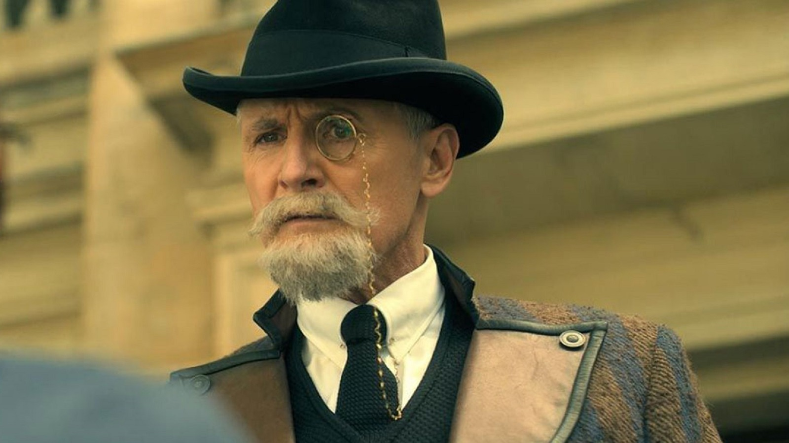
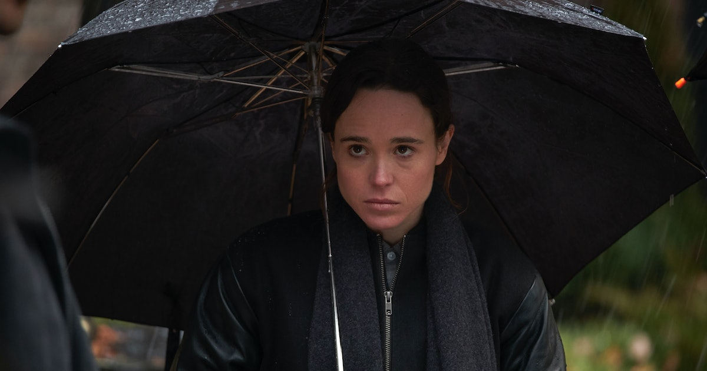
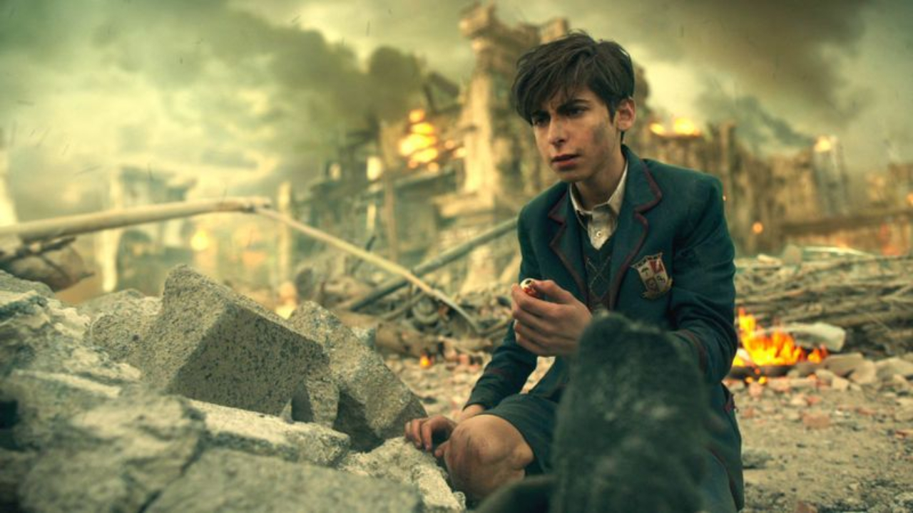
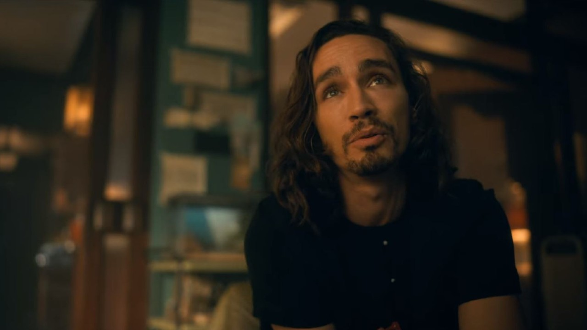
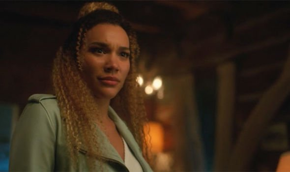
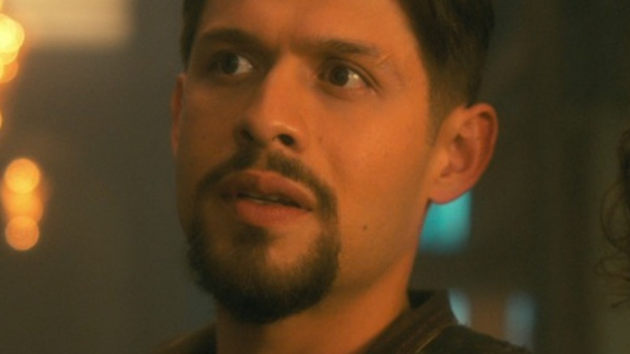
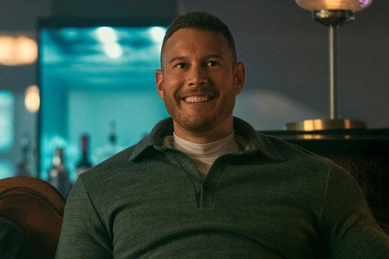

The Umbrella Academy - A Série
1º Temporada:
Após fazerem fama como vigilantes na infância, os sete crescem e se tornam adultos problemáticos e distantes entre si.
O grupo é forçado a se reencontrar quando o Sir Reginald Hargreeves, o pai adotivo das crianças, morre de forma suspeita,
levando-os a questionar as causas.

O número 7, Victor (antes de sua descoberta e transição de genêro, que ocorre na terceira temporada) ganha maior destaque
na introdução por ser o excluído do grupo, já que não tem nenhum superpoder e sempre sofreu por isso, o que só se agravou
quando decidiu escrever um livro expondo todas os segredos da casa. Ele guia o público e apresenta esse universo em que
heróis são comuns aos habitantes, a matriarca da família é um robô e o mordomo, um chimpanzé.

O número 7, Ben é o irmão que, infelizmente, já não está mais no mundo dos vivos, mas que pode ser visto por Klaus.
Ele tem o poder de invocar e controlar criaturas assustadoras com tentáculos através de um portal em seu estômago.
A sua morte foi um dos motivos do grupo começar a ruir e se separar.

O número 5, único sem nome. O seu poder é de viajar no tempo, mas em uma missão ele acabou preso no futuro com o corpo
de um garoto de 13 anos, e é quando ele descobre que o fim do mundo está próximo. Anos depois, ele retorna à mansão em que
cresceu e alerta os irmãos sobre o que está prestes a acontecer

O número 4, Klaus tem um poder que o perturba: a capacidade de se comunicar com os mortos. Ele também consegue mover
objetos, levitar, possuir pessoas, entre outras coisas. Para conseguir viver com isso, ele acaba se tornando alcoólatra
e viciado em drogas, vivendo perigosamente pelas cidades com seu estilo meio gótico e uma personalidade que pode ser muito irritante

A número 3, Allison tem o poder de manipular a mente das pessoas através da sua voz e da mentira. Com isso, ela consegue o que quer apenas
dizendo "eu ouvi um rumor que" junto ao seu pedido. Depois de adulta, casou e teve uma filha, mas acabou perdendo a guarda da garotinha por ter
usado os seus poderes com ela.

O número 2, Diego é o membro mais rebelde do Umbrella Academy e, por isso, acaba tendo alguns conflitos com os irmãos. O personagem tem uma
grande habilidade com facas e gosta de sair pela cidade mascarado para resolver crimes do dia a dia

O número 1, Luther é o líder da Equipe, e sempre foi o mais próximo do pai, sendo o único que continuou o ajudando na vida adulta. Em uma missão
mais do que desastrosa, Reginald precisou salvar a vida do filho e, para isso, Luther precisou passar por uma cirurgia que o deixou com um corpo de Macaco,
o que praticamente destruiu a sua vida social

2º Temporada:
Tomando os momentos finais da temporada de estreia como ponto de partida, os novos episódios mostram os Hargreeves aparecendo em Dallas, nos Estados Unidos,
em diferentes momentos da década de 1960. Separados, os irmãos constroem novas vidas na cidade do Texas, sem saber onde está o resto da família. A reunião só
acontece quando Cinco descobre que o apocalipse que tentava evitar na temporada anterior “seguiu” os Hargreeves na viagem temporal e agora está programado para
acontecer cerca de 50 anos mais cedo.

Entre fins do mundo e cronologias destoantes, os Irmãos Hargreeves agora precisam lidar com uma nova versão de seu próprio presente, onde tudo foi modificado além de sua compreensão.
É nesse terreno que surge a Academia Sparrow – fruto das desventuras dos Hargreeves na segunda temporada. E como se tudo isso não fosse o bastante, os heróis ainda precisam lidar com o kugelblitz,
um novo evento apocalíptico que pode pôr um fim à vida no universo.

Voltar